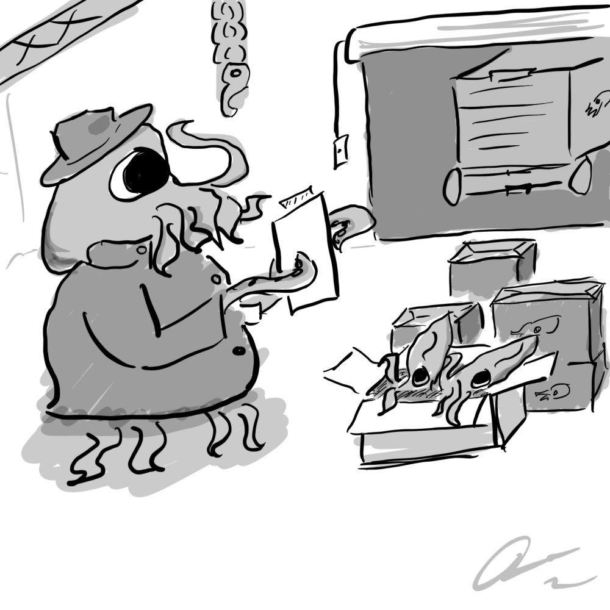

01◈
Native desktop studio
Runs natively on Windows, macOS, and Linux. No browser tabs, no accounts, no subscriptions — just an app that lives on your machine.
⇢local-first AI studio
MAMA is a cross-platform desktop app that turns local AI development into a guided, visual workflow. No YAML. No terminal. No cloud. Your models never leave your computer.
WINDOWS · MACOS · LINUX · FREE & OPEN SOURCE

what you get
Runs natively on Windows, macOS, and Linux. No browser tabs, no accounts, no subscriptions — just an app that lives on your machine.
⇢Create a project, pick a model, import a dataset, and start training through a visual interface a novice can master.
⇢Save complete training configurations as Builds. Create workflows, share them, reproduce experiments, and switch setups instantly.
⇢Python detection, dependency installation, GPU detection, hardware compatibility — all the boring stuff, handled for you.
⇢Models, datasets, projects, training runs, builds, and settings — organized in one place, not scattered across folders.
⇢Your datasets, checkpoints, and projects remain yours. Know exactly what went into your model — and what it costs the planet.
⇢the app
The methodology is honest about it: all the abstract planning, thinking, and mapping — every component, workflow, page, and aesthetic — is done by a human, extensively designed before a line of code exists. The implementation itself is written by AI, then verified by the developer before each release.
Here are examples of our (100% human-made) art.
 Launch
Launch
 File explorer
File explorer

Export Inspect
Inspect
 Loading
Loading
 Error
Error
the flow
Name it, choose a model, and import a dataset from the visual interface.
Set your hyperparameters once, save them as a reusable build.
MAMA sets up the environment, finds your GPU, and runs the training.
Use your finished model locally, fully aware of what went into it.
why
"AI should be difficult because of the problems you're solving — not because of the tools you're forced to use."
MAMA exists to give people agency over AI. If you have reasonable hardware, you can create and run any kind of model with no prior AI experience — training on data you curated yourself, with no corporate data-stealing and no hidden costs.
You know exactly how much energy, resources, and water go into running and training your models. Every component, workflow, page, and aesthetic was designed by a human — and every release is verified by the developer before it ships.
OPEN SOURCE, BY DESIGN
MAMA is free and Beerware-licensed (revision 42). The entire source is public on GitHub, so anyone can read it, audit it, and run it — no telemetry, no accounts, no lock-in. This project leans heavily on AI-generated code, and its developer owns that fact openly, rather than hiding it.
STANDING ON THE SHOULDERS OF OTHERS
MAMA is released under the Beerware license (revision 42).
join in
Fixing bugs, improving docs, designing UI, adding training backends — all welcome. New here? The Issues page has beginner-friendly tasks waiting for you.